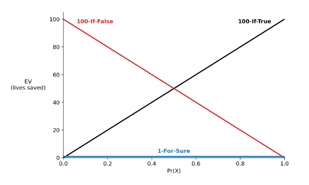
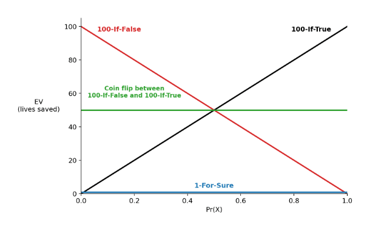

Challenging the Unawareness Argument with Third Actions and Mixed Actions
1. Introduction
Here’s Anthony DiGiovanni’s unawareness argument, quoted from his summary post (footnotes omitted):
Let’s say that we c-prefer A over B if the reason we prefer A is an impartial altruistic comparison of the actions’ possible consequences.
P1. Normative premise: To justify c-preferring A over B, it’s not enough to say (e.g.) that A seems heuristically good. Rather, we need to argue that A has higher “expected value” broadly speaking, meaning: In some sense we “expect” that, if we were idealized agents who could aggregate all of A’s and B’s possible consequences into literal EVs, then we’d say A has higher EV. (We ourselves don’t need literal EVs to justify c-preferences, hence the scare quotes.) Otherwise, it’s unacceptably arbitrary to c-prefer A.
P2. Conceptual premise: If our understanding of A’s and B’s possible consequences is sufficiently coarse-grained, then we don’t have an argument for “expecting” our idealized self’s EV for A to be higher, lower, or equal to B’s. So A’s and B’s “EVs” are incomparable. In particular:
a. Against precise EVs: We shouldn’t represent actions’ degrees of c-preferability with literal precise expected values.
b. Against “best guesses”: Even if we don’t use literal precise EVs, we shouldn’t always force ourselves to compare A’s and B’s “EVs”.
P3. Empirical premise: Due to unawareness (at least), our understanding of any pair of actions’ possible consequences is indeed very coarse-grained — enough that the conclusion of (P2) follows (i.e., these actions’ “EVs” are incomparable). In particular, the actions’ “EVs” are too severely imprecise to compare them, regardless of whether we (a) formally model these “EVs” or (b) appeal to informal/heuristic arguments.
Conclusion: We aren’t justified in c-preferring any action over any other.
I’m going to argue against P1: the normative premise. I think you can be justified in c-preferring an action A over another action B without “expecting” your idealized self to assign higher EV to A than B. In particular, I think this can happen in situations where you have a third available action C, in addition to A and B.
I’m also going to argue against the inference. Even if P1, P2, and P3 are true, the conclusion doesn’t follow. In fact, I think the conclusion is false: we are justified in c-preferring some actions over others. The key is to recognize the possibility of mixed actions, like flipping a coin and performing different actions depending on whether it lands heads or tails.
2. When can you “expect” your idealized self to assign higher EV to A than B?
P1 says that, to justify c-preferring A over B, we need to “expect” that our idealized self would assign higher EV to A than B. What does DiGiovanni mean by “expect”? It can’t be mathematical expectation or greater-than-50% credence. DiGiovanni thinks (and I agree) that we’re too clueless for that. If we can’t assign meaningful EVs to actions, we also can’t assign meaningful credences to hypotheses about the EVs that our idealized selves would assign to those actions. Any credences we did assign would be unacceptably arbitrary.Here are the quotations from DiGiovanni (and coauthors) that make me think he’d endorse this: “Where do the precise higher-order weights come from? How do you non-arbitrarily pin them down?” (source). “Insofar as our representor exhaustively describes our epistemic state, it’s not clear what these higher-order weights are supposed to mean. Each distribution in the representor models a different way of weighing up the relevant considerations, and, by hypothesis, we think it’s indeterminate which way is best. So why is the aggregated representor, derived from putting determinate weights on each distribution, a better description of what we ought to believe? By aggregating, instead of adding information for free, it seems we lose information about our inability to non-arbitrarily pin down weights.” (source)
So what does DiGiovanni mean by “expect”? I don’t need a full answer. For now, I just need the following principle, which I think DiGiovanni would endorse:
Dissent
If some probability function in your representorA representor is a set of probability functions used to represent an agent’s beliefs. assigns higher EV to B than A, then you can’t “expect” your idealized self to assign higher EV to A than B.Here are quotations from DiGiovanni that make me think he’d endorse Dissent: “Strategy s1 is better than s2 if and only if s1 has higher [EV] under every p in P.” (source) “Given two strategies, if neither strategy is net-better than the other under all these ways of making precise evaluations, then we’re not justified in comparing these strategies.” (source) “On the supervaluationist approach, it seems to straightforwardly follow that one option is determinately at least as good as another if and only if that is the case relative to all measures in P.” (source) “we prefer action A over B if and only if A has higher expected utility under every distribution in the set.” (source)
Dissent is hard to deny. Ideal reflection on your evidence could lead you to settle on any probability function in your representor. So if your representor contains some function on which B has higher EV than A, your idealized self might settle on it. In that case, you can’t “expect” your idealized self to assign higher EV to A than B.
3. A challenge to P1
With Dissent in our pocket, here’s a case to challenge P1. It’s a case in which some probability functions in your representor rank B above A (and hence, by Dissent, you can’t “expect” your idealized self to assign higher EV to A than B), and yet it seems plausible that you’re justified in c-preferring A to B.
Take a proposition X about which you’re truly clueless: so clueless that your representor contains at least one probability function on which Pr(X) < 0.01 and one probability function on which Pr(X) > 0.99.This is just for convenience. The argument also works for propositions with narrower probability ranges. We just have to scale up the size of the sure payoff accordingly. And suppose you have three options:
100-If-True: Save 100 lives if X is true.
100-If-False: Save 100 lives if X is false.
1-For-Sure: Save 1 life for sure.
Here’s a diagram to represent these options, with Pr(X) on the x-axis and EV on the y-axis:

Given this setup, you can’t “expect” your idealized self to assign higher EV to 100-If-True than 1-For-Sure. After all, your idealized self could settle on a probability function on which Pr(X) < 0.01. That would mean 1-For-Sure saves more lives in expectation. Similarly, you can’t “expect” your idealized self to assign higher EV to 100-If-False than 1-For-Sure, because your idealized self could settle on a probability function on which Pr(X) > 0.99.
So according to P1, you’re not justified in c-preferring either of 100-If-True or 100-If-False to 1-For-Sure. But this seems implausible. As the diagram indicates, there is no probability function in your representor on which 1-For-Sure has the highest EV of your available actions. 1-For-Sure is, as I’ll say, nowhere-optimal:
Nowhere-Optimal
An action is nowhere-optimal if and only if it doesn’t have the highest EV of all available actions on any probability function in your representor.
And on top of that, there are probability functions in your representor on which 1-For-Sure has much lower EV than 100-If-True and 100-If-False. On probability functions on which 100-If-True has lower EV than 1-For-Sure, 100-If-False has much higher EV. And on probability functions on which 100-If-False has lower EV than 1-For-Sure, 100-If-True has much higher EV. Given these facts, it seems intuitive that you’re justified in c-preferring at least one of 100-If-True and 100-If-False to 1-For-Sure. If that intuition is true, P1 is false.
Here’s an extra argument for the intuition. Imagine that the only things that distinguish your options are their consequences, so that c-preferences are the only bases on which to determine what you’re morally permitted to do. (So none of the options violates any deontological constraint, exercises a personal prerogative, or anything like that.) Even given this stipulation, it seems morally wrong to choose 1-For-Sure. If that’s right, you must be justified in c-preferring 100-If-True or 100-If-False to 1-For-Sure, since c-preferences are the only things that could make it wrong to choose 1-For-Sure. That again implies P1 is false.
4. A challenge to the inference
Suppose you’re not convinced and you want to hold on to P1. I also have a challenge for the inference: P1, P2, and P3 can all be true (at least depending on how you read them) and yet the conclusion can be false. In fact, I’ll argue that the conclusion is false.
Consider again our case above, but now suppose you have access to a fair coin. That gives you another option: flip the coin, and then choose 100-If-True on heads and 100-If-False on tails. This option averages the EVs of 100-If-True and 100-If-False. The result is that, on every probability function in your representor, the coin flip has an EV of 50 lives saved. Let’s add that to our diagram:

As you can see, the coin flip has higher EV than 1-For-Sure on every probability function in your representor. When that’s the case, we’ll say that the coin flip dominates 1-For-Sure:
Dominance
An action A dominates an action B if and only if A has higher EV than B on every probability function in your representor.
We then appeal to the following principle:
Unanimity
If A dominates B, then you can “expect” your idealized self to assign higher EV to A than B.
I think DiGiovanni would endorse Unanimity.Here are the quotations from DiGiovanni that make me think he’d endorse Unanimity: “Strategy s1 is better than s2 if and only if s1 has higher [EV] under every p in P.” (source). “On the supervaluationist approach, it seems to straightforwardly follow that one option is determinately at least as good as another if and only if that is the case relative to all measures in P.” (source). “we prefer action A over B if and only if A has higher expected utility under every distribution in the set.” (source) And it seems hard to deny. Your representor is supposed to represent your entire belief state, so (in some sense) every part of your belief state is telling you that A has higher EV than B. It’s then unclear why you couldn’t “expect” your idealized self to assign higher EV to A than B.
There’s one more assumption I’ll need for my argument. P1 only states a necessary condition on justified c-preference, but I’ll assume the sufficiency direction as well. Let’s call it:
Justification
If you can “expect” your idealized self to assign higher EV to A than B, then you’re justified in c-preferring A to B.Here are the quotations from DiGiovanni that (together with Dissent) make me think he’d endorse Justification: “all possible ways of making a strategy’s UEV precise have the same sign… So the strategy’s net impact is comparable with 0, i.e., we can say it’s net-positive.” (source) “Strategy s1 is better than s2 if and only if s1 has higher [EV] under every p in P.” (source). “On the supervaluationist approach, it seems to straightforwardly follow that one option is determinately at least as good as another if and only if that is the case relative to all measures in P.” (source). “we prefer action A over B if and only if A has higher expected utility under every distribution in the set.” (source)
Now we have everything we need. The coin flip dominates 1-For-Sure, so by Unanimity you can “expect” your idealized self to assign higher EV to the coin flip than 1-For-Sure. Then by Justification, you’re justified in c-preferring the coin flip to 1-For-Sure.
This fact about the coin flip generalizes, giving us the following result:
Result
If some action N is nowhere-optimal, then N is dominated by some mixed action.A mixed action is a commitment to perform different actions conditional on different outcomes of a lottery. ‘Choose 100-If-True on heads and 100-If-False on tails’ is an example of a mixed action.This result appears as Lemma 3 in Pearce (1984). It holds given finitely many pure actions (or a compact set of them) and a closed, convex representor. See also Troffaes (2007): “This leaves E-admissibility [i.e. being highest EV on some probability function in your representor] and maximality [i.e. not being lower EV than any other action on every probability function in your representor]… they coincide if the set of gain gambles is convex (for instance, if we consider randomised decisions).” Raiffa (1961) makes the point that randomization can turn ambiguity into risk: “Suppose you withdraw a ball from the urn with unknown composition but do not look at its color. Now toss a fair (unbiased) coin and call ‘red’ if heads, ‘black’ if tails. The ‘objective’ probability of getting a match is now .5…” Michael St. Jules makes a point along these lines in this post. He shows that a portfolio of interventions can be better than doing nothing on every worldview even when no single intervention is.
And if N is dominated by some mixed action, Unanimity and Justification together imply that you’re justified in c-preferring the mixed action to N.
This result sets up a challenge to DiGiovanni’s conclusion: that we aren’t justified in c-preferring any action over any other. Specifically, it lowers the bar. No longer do we need to find some pair of actions A and B such that A dominates B. Instead, we just need to find some nowhere-optimal action N: some action that doesn’t have the highest EV of all available actions on any probability function in your representor. Then, by the Result, we can trust that there’s some mixed action that dominates N.
Plausibly, there are such nowhere-optimal actions. For example, I claim that donating $5 to the Make-A-Wish Foundation (MAWF) is nowhere-optimal. For this not to be the case (i.e. for the MAWF donation to be somewhere-optimal), it’s not enough to just imagine a story in which donating $5 to MAWF happens to turn out best. Instead, it would have to be that ideal reflection on your current evidence could lead you to settle on a probability function on which donating $5 to MAWF has the highest EV of all your available actions.
And this seems very implausible to me. To see why, note first that ideal reflection is something you do from the armchair. You don’t get to go out and gather new evidence. You only get to reflect on the evidence you already have. And note second that donating $4.99 to MAWF and donating $5.01 to MAWF are also available actions, so your reflection would have to lead you to assign higher EV to donating $5 than to either of these. It’s hard to see how reflection could do that. Coming to believe that donating $5 is the highest-EV action available to you would seem to require forming beliefs about the likely consequences of donating $5 specifically. For example, you might have to form a belief that there’s some threshold effect that kicks in at $5, such that $4.99 would fail to trigger it and $5.01 would be overkill. It seems unlikely that pure reflection on your current evidence could lead you to believe in such an effect. If that’s right, donating $5 to MAWF is nowhere-optimal, so it’s dominated by some mixed action, so we’re justified in c-preferring the mixed action. That means DiGiovanni’s conclusion is false: we are justified in c-preferring some actions over others. Specifically, for every nowhere-optimal action N, we’re justified in c-preferring some mixed action to N.
5. The relevant mixed actions might be hard to find
Here’s a potential concern. You might know that you’re justified in c-preferring some mixed action over donating $5 to MAWF, and yet not know which mixed action you’re justified in c-preferring. Depending on the extent of your cluelessness, it could be quite complicated, spreading probability mass over a huge number of different actions. This mixed action would still be available to you in some sense. It would be physically possible for you to perform it, and you could happen to perform it by chance if you correctly guessed the probability distribution. But you couldn’t reliably choose to perform it.
Does that rescue the spirit of DiGiovanni’s conclusion? I don’t think so. To see why, it’ll be useful to have some terminology:
Somewhere-Uniquely-Optimal
An action S is somewhere-uniquely-optimal if and only if S alone has the highest EV of all available actions on some probability function in your representor.
With that in hand, we can state a result that’s a reverse of the above:
Reverse Result
If some action S is somewhere-uniquely-optimal, then you’re not justified in c-preferring any other action (mixed or not) to S.
The proof is quick and it just needs Dissent. Take a probability function on which S is uniquely optimal. Every other pure (i.e. non-mixed) action has a strictly lower EV there, and so does every mixed action: a mixed action’s EV is the average of its components’ EVs, and some of its components have lower EV than S on the relevant probability function. So for every rival action R to S, there’s a probability function in your representor on which S has higher EV than R. Then by Dissent, there’s no rival R such that you can “expect” your idealized self to assign higher EV to R than S. And then by P1, there’s no rival that you’re justified in c-preferring to S.
So, whatever situation you find yourself in, you can be sure that:
For every nowhere-optimal action N, you’re justified in c-preferring some other action to N (even though you might not know which action).
For every somewhere-uniquely-optimal action S, you’re not justified in c-preferring any other action to S.
These facts make me think that it’s morally wrong to choose nowhere-optimal actions, and morally right to choose somewhere-uniquely-optimal actions.At least in situations that don’t involve any deontological constraints, personal prerogatives, or anything like that, so that c-preferences are the only bases on which to determine what you’re morally permitted to do. That would mean it’s right to act like a person who c-prefers somewhere-uniquely-optimal actions to nowhere-optimal actions. That makes me think that DiGiovanni’s conclusion is false in spirit, as well as in the letter.
6. Does our rule guide clueless agents?
So our candidate moral rule in the face of cluelessness is:
Choose a Somewhere-Uniquely-Optimal Action
1. It’s morally impermissible to choose a nowhere-optimal action.
2. It’s morally permissible to choose a somewhere-uniquely-optimal action.
This rule isn’t complete, because it doesn’t tell us about the moral status of actions that are somewhere-jointly-optimal-but-nowhere-uniquely-optimal. But it’s complete enough to be getting on with.
Is this a decision rule that clueless agents can follow? Can clueless agents identify nowhere-optimal actions? Can they identify somewhere-uniquely-optimal actions? I think the answer to each of these questions is yes. To determine whether an action is nowhere-optimal, you ask: could ideal reflection on my current evidence lead me to regard this action as the highest-EV action available to me? That question seems answerable. We already answered it for the $5 MAWF donation in the previous section. And we used a test to do it: could ideal reflection lead me to regard this action as higher EV than donating $4.99 and $5.01? This sort of ‘flanking variants’ test can be applied generally. We ask whether ideal reflection could lead us to judge an action higher EV than all of its flanking variants. If the answer is no, the action is nowhere-optimal.
We can also feasibly identify somewhere-uniquely-optimal actions. Presumably, we have introspective access to at least one of the probability functions in our representors. For example, we have introspective access to our forced-to-say-a-number probability function. We can then calculate EVs on that function. If multiple actions are tied for EV on that function, we can calculate their EVs on very-slightly-different probability functions (e.g. changing the probability on some proposition from 80% to 79.999%) until we have a unique winner. That gives us a somewhere-uniquely-optimal action.
Of course, there are practical problems with this procedure (like listing out all of our available actions and calculating their EVs), but these are not cluelessness problems. They’d blight us even if we weren’t clueless (with just one probability function in our representor) and we can handle them in standard ways: focusing on a subset of our available actions and calculating their EVs in broad strokes. We then subject our candidate somewhere-uniquely-optimal action to the ‘flanking variants’ test. That might lead us to shift the action along some dimensions (e.g. donating more or less), but we’ll still hit a maximum somewhere. In general, if our set of available actions is finite, then for each probability function there must be some action with highest EV.If multiple actions are tied for highest EV on some probability function, we can use other probability functions as tiebreakers. If multiple actions are tied for highest EV on every probability function, then we can know that each is not justifiably c-dispreferred to any other available action, and so we can regard each action as morally permissible. This action will be at the place where, on our forced-to-say-a-number probability function, shifting along any dimension will have greater expected costs than benefits.
7. Conclusion
I’ve presented two challenges to the unawareness argument. The first is a challenge to P1. In the case of 100-If-True, 100-If-False, and 1-For-Sure, you can’t “expect” your idealized self to assign higher EV to either bet than to 1-For-Sure. But 1-For-Sure is nowhere-optimal, and it seems wrong to choose it over each bet. So plausibly, you’re justified in c-preferring at least one of the bets to 1-For-Sure. If that’s right, P1 is false.
The second is a challenge to the inference. Suppose P1 is true. The coin flip between 100-If-True and 100-If-False dominates 1-For-Sure, so by Unanimity, you can “expect” your idealized self to assign it higher EV. Then by Justification, you’re justified in c-preferring the coin flip to 1-For-Sure. And the point generalizes: every nowhere-optimal action is dominated by some mixed action, and we’re justified in c-preferring the mixed action. And plausibly, lots of the actions available to us are nowhere-optimal. For example, donating $5 to the Make-A-Wish Foundation is nowhere-optimal because ideal reflection on your evidence couldn’t single it out over its flanking variants, like donating $4.99 and $5.01. So DiGiovanni’s conclusion is false: we’re justified in c-preferring some actions to others.
These two challenges led us to a decision rule for clueless agents: choose a somewhere-uniquely-optimal action. We can be confident that these actions are not justifiably c-dispreferred to any other action. And plausibly we can identify somewhere-uniquely-optimal actions. One way would be to calculate EVs on our forced-to-say-a-number probability functions.
So principles like Dissent, Unanimity, and Justification have taken us almost back to where we began. Clueless agents should pick some probability function and maximize EV with respect to it.